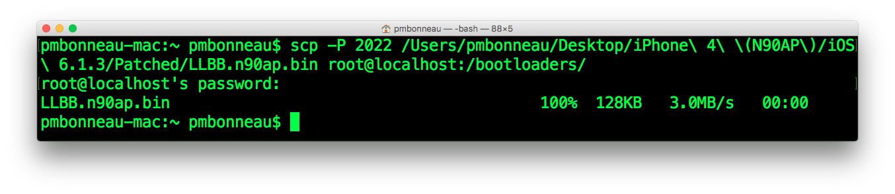
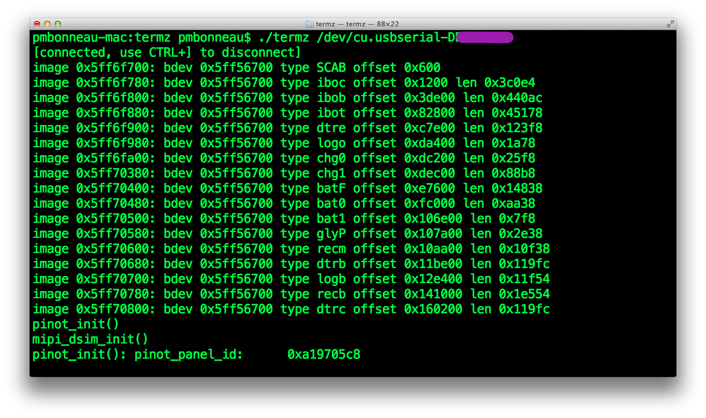

Prepare main iOS
Jailbreak the main iOS install using your favorite way.
The most important thing is that code signing enforcement with AMFI (Apple Mobile File Integrity) are disabled to allow launching kloader executable and task_for_pid0 is enabled to allow kloader to do its magic.
Once you have Cydia installed on your device, add http://pmbonneau.com/cydia repository.
Search for, then install the following packages:
- openssh (Saurik's repo) - SSH protocol must be enabled in order to send commands and transfert files to the device.
- hfs_resize (pmbonneau's repo) - This tool allows resizing a mounted HFS+ volume.
- gptfdisk (pmbonneau's repo) - A partition manager
- mksysbag - Calls MobileKeyBag.framework to regenerate a system keybag.
- kloader6 - (pmbonneau's repo) - Jump back to low-level code from userland.
Setup LLB images for kloader From a SSH connection, create a directory named "bootloaders" at root of your main iOS system partition.
mkdir /bootloaders
Using SCP, transfert the patched LLB images to /bootloaders on the device. Be sure that the LLB images are a RAW ARM binary image, not packed into a .img3 container because kloader will try to run the img3 header as code. This might cause unexpected behaviour.pmbonneau-mac#scp -P 2022 LLBB.n90ap.bin root@localhost:/bootloaders
pmbonneau-mac#scp -P 2022 LLBC.n90ap.bin root@localhost:/bootloaders
 Launch kloader with the patched LLB image.iphone-n90ap#kloader6 /bootloaders/LLBB.n90ap.bin
To do the following checks, I strongly recommand using a serial cable.Press home or power button to boot the patched LLB image. It should jump to the patched iBoot (screen light-up), display iOS 6.1.3 bootlogo, then iOS 6.1.3 recovery logo.
Using irecovery, connect to the recovery mode device.
pmbonneau-mac#irecovery -s
You should see Kernelcache image not valid before the irecovery command line prompt.If you have a serial cable, plug your device with it before running kloader. Once the patched bootchain is starting, you should see iBoot live logging. Verify that all additional images you flashed are found by the bootloader.  You should see all type tags you set to additional images. While I was taking screenshots for this writeup, I noticed that logc and recc are missing. This is probably because the two additional iBoot I flashed are taking most of the nand_firmware free space.
You should see Kernelcache image not valid like on the screenshot above. This error is currently a normal behaviour, because the kernelcache for our secondary operating systems is not installed yet. Seeing Kernelcache image not valid means that iBoot is ready to find and load the kernelcache image. At this point, the devicetree image should be properly loaded.
Resize main data partition An iOS default install comes with two visible partitions, system and data. The system partition stores the iOS system files and the data partition stores user data. Each additional iOS systems will require two partitions, just like the main one. An iOS multiboot partition layout should looks like this.
- System (Main OS system partition)
- Data (Main OS data partition)
- SystemB (Secondary OS system partition)
- DataB (Secondary OS data partition)
- SystemC (Third OS system partition)
- DataC (Third OS data partition)
- SystemD (Fourth OS system partition)
- DataD (Fourth OS data partition)
- From iOS 1.x to 3.x : MBR
- From late 3.x to 4.3.5 : Regular GPT
- From 5.x to 13.x : LwVM + GPT
For an iOS 7.1.2 with iOS 6.1.3 and 5.1.1 triple-boot on a 32 GB iPhone 4, we could plan a disk setup like this.
- System (iOS 7.1.2 system partition) -- 2.5 GB
- Data (iOS 7.1.2 data partition) ------ 8 GB
- SystemB (iOS 6.1.3 system partition) - 2.4 GB
- DataB (iOS 6.1.3 data partition) ----- 8 GB
- SystemC (iOS 5.1.1 system partition) - 2.4 GB
- DataC (iOS 5.1.1 data partition) ----- 8 GB
iphone-root#hfs_resize [mount point] [capacity in bytes]
The mount point is the folder where your disk device is mounted. For iOS, the data partition is always mounted in /private/var of the root filesystem. For the resized data partition size, you have to manually calculate it. For example, you want 8 GB as primary OS data partition.1 GB = 1024 * 1024 * 1024 = 1073741824 bytes
8 GB = 8 * 1073741824 = 8589934592
Our command to reduce the iOS 7.1.2 data partition to 8 GB would be like this.
iphone-root#hfs_resize /private/var/ 8589934592
 If we check in device settings, we should see that our main iOS install now have a total of 8 GB capacity.
If we check in device settings, we should see that our main iOS install now have a total of 8 GB capacity.